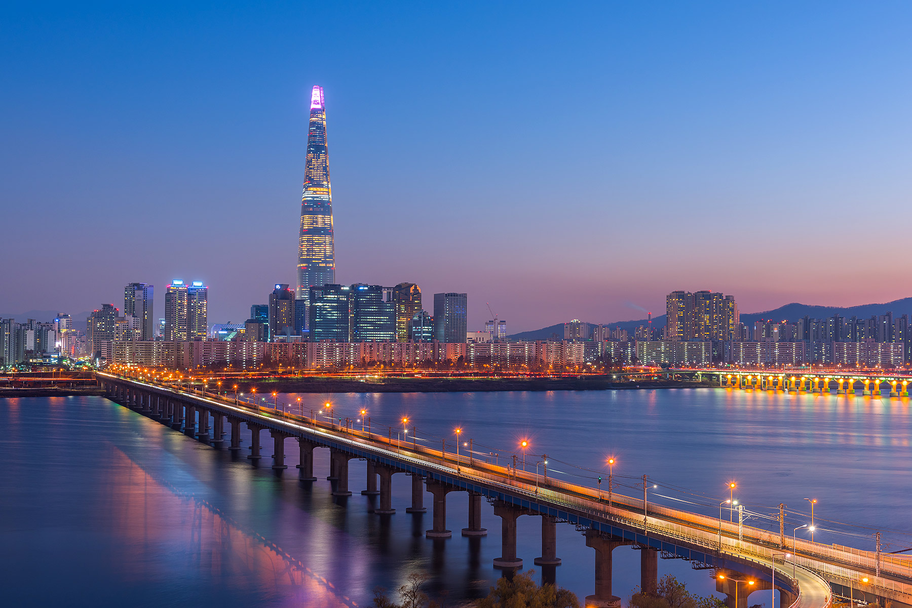

Corea del Sur
El paraíso tecnológico

Seúl es la ciudad más grande de Corea del Sur así como la capital de este país, por lo que se ha
convertido en un destino importante en el este de Asia.
El crecimiento Exponencial de corea del sur:
- 1948 - como consecuencia de la división de la península entre los soviéticos y los estadounidenses, surgieron dos nuevas entidades: Corea del Norte y Corea del Sur.
- 1950 - La economía de Corea del Sur ha crecido rápidamente desde la década de 1950. Hoy en día, es la 13ª economía más grande (por PIB PPA) del mundo7 y está clasificado como país desarrollado por la ONU, el Banco Mundial y el Fondo Monetario Internacional (FMI).8910 También se encuentra entre los países más avanzados tecnológicamente y mejor comunicados;1 es el tercer país con mayor número de usuarios de Internet de banda ancha entre los países de la OCDE, siendo también uno de los líderes globales en producción de aparatos electrónicos, dispositivos semiconductores y teléfonos móviles. También cuenta con una de las infraestructuras más avanzadas en el mundo13 y líder mundial en la industria de la construcción naval, encabezada por compañías prominentes como Hyundai Heavy Industries.